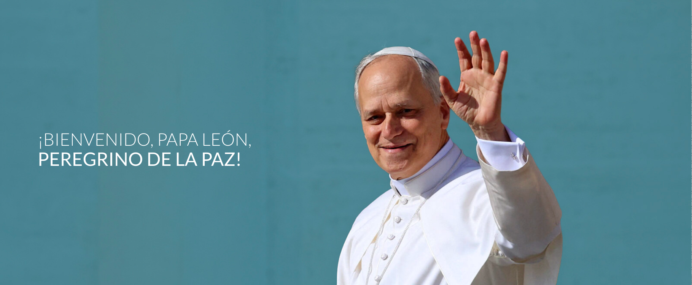

Toda la información que necesitás para vivir la visita del papa León XIV en comunidad.
Toda la información para el Día RC el domingo 8/11 (eventos Familia RC y Jóvenes RC)
Consultá tus eventos, colectivos y kit RC
Día RC · Oakhill Pilar
Evento Familia RC
Consultá los accesos, acreditaciones y sectores del encuentro. Tocá el plano para ampliarlo.
Domingo 8 de noviembre
Lectura del libro de la Sabiduría
Radiante e incorruptible es la sabiduría;
con facilidad la contemplan quienes la aman
y ella se deja encontrar por quienes la buscan
y se anticipa a darse a conocer a los que la desean.
El que madruga por ella no se fatigará,
porque la hallará sentada a su puerta.
Darle la primacía en los pensamientos
es prudencia consumada;
quien por ella se desvela
pronto se verá libre de preocupaciones.
A los que son dignos de ella,
ella misma sale a buscarlos por los caminos;
se les aparece benévola
y colabora con ellos en todos sus proyectos.
R. Señor, mi alma tiene sed de ti.
Señor, tú eres mi Dios, a ti te busco;
de ti sedienta está mi alma.
Señor, todo mi ser te añora
como el suelo reseco añora el agua.
R. Señor, mi alma tiene sed de ti.
Para admirar tu gloria y tu poder,
con este afán te busco en tu santuario.
Pues mejor es tu amor que la existencia;
siempre, Señor, te alabarán mis labios.
R. Señor, mi alma tiene sed de ti.
Podré así bendecirte mientras viva
y levantar en oración mis manos.
De lo mejor saciará mi alma;
te alabaré con jubilosos labios.
R. Señor, mi alma tiene sed de ti.
Lectura de la primera carta de san Pablo a los Tesalonicenses
Hermanos: No queremos que ignoren lo que pasa con los difuntos, para que no vivan tristes, como los que no tienen esperanza. Pues, si creemos que Jesús murió y resucitó, de igual manera debemos creer que, a los que murieron en Jesús, Dios los llevará con él.
Lectura del santo Evangelio según san Mateo
En aquel tiempo, Jesús dijo a sus discípulos esta parábola: “El Reino de los cielos es semejante a diez jóvenes, que tomando sus lámparas, salieron al encuentro del esposo. Cinco de ellas eran descuidadas y cinco, previsoras. Las descuidadas llevaron sus lámparas, pero no llevaron aceite para llenarlas de nuevo; las previsoras, en cambio, llevaron cada una un frasco de aceite junto con su lámpara. Como el esposo tardaba, les entró sueño a todas y se durmieron.
A medianoche se oyó un grito: ‘¡Ya viene el esposo! ¡Salgan a su encuentro!’ Se levantaron entonces todas aquellas jóvenes y se pusieron a preparar sus lámparas, y las descuidadas dijeron a las previsoras: ‘Dennos un poco de su aceite, porque nuestras lámparas se están apagando’. Las previsoras les contestaron: ‘No, porque no va a alcanzar para ustedes y para nosotras. Vayan mejor a donde lo venden y cómprenlo’.
Mientras aquéllas iban a comprarlo, llegó el esposo, y las que estaban listas entraron con él al banquete de bodas y se cerró la puerta. Más tarde llegaron las otras jóvenes y dijeron: ‘Señor, señor, ábrenos’. Pero él les respondió: ‘Yo les aseguro que no las conozco’.
Estén, pues, preparados, porque no saben ni el día ni la hora”.
Cantos de entrada
Juntos servimos al Rey
con un solo corazón,
a su banquete del reino
hoy nos convoca el Señor.
El Rey que ha venido a servir
tiene su trono en la Cruz,
brotan la Sangre y el agua
del Sagrado Corazón.
¡Venga Tu reino, reino
de vida, verdad y de amor,
hasta el extremo!
¡Venga Tu reino, reino de
misericordia y perdón!
¡Venga Tu reino!
Aquí en la mesa del Rey,
el pequeño es el mayor,
nos manda que nos amemos
como nos ha amado Él.
Ustedes son mis amigos,
ir al mundo a predicar.
Te ruego Señor que en tu reino,
de mí te puedas acordar.
¡Venga Tu reino, reino
de vida, verdad y de amor,
hasta el extremo!
¡Venga Tu reino, reino de
misericordia y perdón
¡Venga Tu reino, reino
de vida, verdad y de amor,
hasta el extremo!
¡Venga Tu reino, reino de
misericordia y perdón!
¡Venga Tu reino!
Canto de entrada
A veces me siento alejado
y la vergüenza no me deja ni hablar.
Sólo sé que me duele verte clavado
porque me olvido de lo mucho que me amás.
Quiero volver a serte fiel.
Quiero volver a serte fiel.
Fiel.
Toma de mí lo que te sirva
para darlo a los demás.
Toma de mí lo que te sirva
no me guardo nada más.
Hoy quiero ser tu instrumento
y predicar tu gran verdad,
la de tu palabra, la de tu cuerpo,
la de tu amor eterno,
la de amar al más pequeño.
Y trato de encontrarte en mis hermanos
pero se me hace imposible sin tu amor.
Soy débil y te pido que tus manos
abran de par en par mi
Quiero volver …
Cantos de Comunión
Enséñame a abrazar mi cruz, Señor
A no escandalizarme de todas mis heridas
Así me has hecho tú así me amas, mi Dios
Enséñame a abrazar tu voluntad, Señor
Si no puedo apartar el cáliz de mi realidad
Renuncio a mi plan, acojo tu verdad
Quiero ser, ser lavado
Ser curado, y quiero
Morir a mí mismo
Enséñame a abrazar mi condición,
Señor
No puedo dar la talla
no soy suficiente
Quiero dejar de hacer
Para dejarme amar (por ti)
Quiero ser, ser lavado
Ser curado, y quiero
Morir a mí mismo
Y quiero estar arrodillado
Quiero vaciarme
Y, en el fondo, siento
Que no soy valorado
Estoy herido
Soy rechazado
Soy pecado
Pero, soy amado, soy aceptado
Soy rescatado, no soy esclavo
Quiero ser, ser lavado
Ser curado, y quiero
Morir a mí mismo
Y quiero estar arrodillado
Quiero vaciarme
Quiero vivir como
Resucitado, resucitado
Resucitado, resucitado
Quiero ser, ser lavado
Ser curado, y quiero
Morir a mí mismo
Y quiero estar arrodillado
Quiero vaciarme
Quiero vivir como
Resucitado
Tú, el Único Rey que tiene que reinar
el Único Señor al que voy a alabar,
Hoy levanto el corazón al que lo
conquistó
Simplemente porque Tú eres Dios
Quiero ponerte por encima de todo
En cada momento sentarte en el trono
Que tu alabanza esté siempre en mi boca
Y reconocer que Tú eres Dios
Que alabarte a ti, Señor
sea siempre lo primero
Fijo mi mirada en el cielo
Tú, el Único Rey que tiene que reinar
el Único Señor al que voy a alabar,
Hoy levanto el corazón al que lo
conquistó
Simplemente porque Tú eres Dios
Y a Ti, toda la alabanza,
todo el poder y el honor,
toda la gloria al Señor (x4)
Vengo como enfermo,
al médico de vida.
Vengo como impuro,
a tu misericordia.
Vengo como ciego,
a la luz del mundo.
Vengo como pobre,
al Señor de señores.
Divino Pan, que oculta humanidad
De un Dios que salva y es digno de alabar.
Jesús presente en la Eucaristía,
Sangre preciosa, Cuerpo de Dios
Eres alimento
que das vida a los hombres.
Concédele a mi alma
que viva de ti.
Hostia divina hoy quiero recibirte,
así convertirme y alabarte Señor.
Divino Pan, que oculta humanidad
De un Dios que salva y es digno de alabar.
Jesús presente en la Eucaristía,
Sangre preciosa, Cuerpo de Dios
No existe un corazón que ame más
que aquel que dijo sí hasta el final,
no descansó, nunca dudó,
lo hizo todo con fe y con amor.
Desde el principio recibió
la gracia que viene solo de Dios.
Con su pequeñez y su humildad
nos muestra el camino a la santidad.
Madre de Dios, llena de gracia,
Reina de paz, Consuelo del alma.
María cuídame, con tu manto cúbreme,
Sé mi puente al cielo, llévame a Dios.
Y así como Tú quiero llenarme de su gracia
que se refleje en mi alma,
la alegría de su amor.
De su amor, de su amor. (bis)
Madre de Dios, llena de gracia,
Reina de paz, Consuelo del alma.
María cuídame, con tu manto cúbreme,
Sé mi puente al cielo, llévame a Dios.
Y así como Tú quiero llenarme de su gracia
que se refleje en mi alma,
la alegría de su amor.
De su amor, de su amor. (bis)
Un grito de guerra
se escucha en la faz de la tierra
y en todo lugar.
Los prestos guerreros empuñan su espada
y se enlistan para pelear
Para eso han sido entrenados,
defenderán la verdad.
Y no les será arrebatado
el fuego que en su sangre está.
¡Viva Cristo Rey, viva Cristo Rey!
El grito de guerra que enciende la tierra.
¡Viva Cristo Rey,
nuestro soberano Señor!
Nuestro capitán y campeón,
pelear por Él es todo un honor.
Sabemos que esta batalla no es fácil
y muchos se acobardarán.
Y bajo los dardos de nuestro
enemigo,
sin duda perecerán.
Yo tendré mi espada en alto,
como la usa mi Señor.
A Él nada lo ha derrotado,
su fuerza es la de Dios.
¡Viva Cristo Rey, viva Cristo Rey!
El grito de guerra que enciende la tierra.
¡Viva Cristo Rey,
nuestro soberano Señor!
Nuestro capitán y campeón,
pelear por Él es todo un honor.
(bis)
Viva Cristo Rey
Elegí un turno para acompañar a Jesús
Durante la jornada tendremos
adoración permanente.
Te invitamos a elegir uno o más turnos de
30 minutos para acompañar a Jesús.
Dirigite al gazebo indicado en el plano
Tocá + para anotarte. Podés elegir más de un horario.
Textos para ayudarte a rezar
Ea, hombrecillo, deja un momento tus ocupaciones, esconde un poco tus tumultuosos pensamientos. Arroja las pesadas preocupaciones y pospón tus fatigosos trabajos. Dedica un rato a Dios y descansa un momento en Él. Entra en el aposento de tu alma, excluye todo excepto a Dios y lo que te ayude a buscarle; cerrada la puerta, búscalo. Di ahora, corazón mío entero, di ahora a Dios: «Busco tu rostro; tu rostro busco, Señor». Amén.
San Anselmo de Canterbury
Te amo, oh mi Dios.
Mi único deseo es amarte
hasta el último suspiro de mi vida.
Te amo, oh infinitamente amoroso Dios,
y prefiero morir amándote que vivir un instante sin Ti.
Te amo, oh mi Dios, y mi único temor es ir al infierno,
porque ahí nunca tendría la dulce consolación de tu amor,
Oh mi Dios,
si mi lengua no puede decir
cada instante que te amo,
por lo menos quiero
que mi corazón lo repita cada vez que respiro.
Ah, dame la gracia de sufrir mientras que te amo,
y de amarte mientras que sufro,
y el día que me muera
no sólo amarte sino sentir que te amo.
Te suplico que mientras más cerca esté de mi hora
final aumentes y perfecciones mi amor por Ti.
Amén.
«¡Tarde te amé, Hermosura tan antigua y tan nueva, tarde te amé!
Tú estabas dentro de mí y yo fuera, y por fuera te buscaba; y deforme como era, me lanzaba sobre estas cosas hermosas que tú creaste. Tú estabas conmigo, pero yo no estaba contigo. Me mantenían lejos de ti aquellas cosas que, si no estuviesen en ti, no existirían.
Llamaste y clamaste, y rompiste mi sordera; brillaste y resplandeciste, y ahuyentaste mi ceguera; exhalaste tu perfume, y respiré, y suspiro por ti; te gusté, y siento hambre y sed; me tocaste, y me encendí en tu paz».
«Si quieres saber cómo se realiza esto, interroga a la gracia, no a la doctrina; al deseo, no al intelecto; al gemido de la oración, no al estudio de la lección; al Esposo, no al Maestro; a Dios, no al hombre; a la tiniebla, no a la claridad; no a la luz, sino al fuego que inflama totalmente y traslada a Dios con excesivas unciones y ardientísimos afectos...
Callen, pues, todas nuestras solicitudes, mueran nuestros deseos y pasemos con Cristo crucificado de este mundo al Padre»
«¡Oh luz de mi alma, amanecer sereno, Dios mío! Mira, te llamo: abre la puerta de tu justicia y permíteme entrar en el santuario de tu presencia, para que mi alma se una a ti en un vínculo eterno.
Señor, levántame del polvo de mis ocupaciones terrenas. Oh Amor, tú que eres el principio de mi vida, renuévame por completo. Que mi corazón sea tu morada permanente, que mis pensamientos se acallen ante tu rostro y que nada en este mundo me distraiga del deseo incesante de contemplarte. Amén».
¡Guíame, Luz Amable, en medio de la densa noche, guíame Tú!
La noche es oscura y estoy lejos de mi hogar; ¡guíame Tú!
Guarda mis pasos; no te pido ver las escenas lejanas: un solo paso me basta.
No siempre fui así, ni pedí que me guiaras.
Me gustaba elegir y ver mi camino; pero ahora: ¡guíame Tú!
Amaba el día deslumbrante, y a pesar de mis temores, el orgullo gobernaba mi voluntad. No recuerdes los años pasados.
Tanto tiempo tu poder me ha bendecido, que estoy seguro de que aún me guiará a través de páramos y pantanos, sobre peñascos y torrentes, hasta que la noche disipe…
¿De dónde te viene, oh alma, este anhelo tan vivo? ¿De dónde este gemido tan ardiente y este buscar a tu Dios, sino de que ya has sido tocada por Él?
Despierta, mente mía, entra en el secreto de esta búsqueda. Que callen las voces del siglo, que se aparte la soberbia de la razón que todo lo quiere medir. Señor, Tú que inspiras el deseo, otórgame el encuentro. Te busco porque ya te amo, y te amo porque Tú me buscaste primero
Nada te turbe,
nada te espante,
todo se pasa,
Dios no se muda.
La paciencia
todo lo alcanza;
quien a Dios tiene
nada le falta:
Sólo Dios basta.
Oración durante la visita al Santísimo Sacramento
Señor Jesucristo, que por el amor que tienes a la humanidad permaneces día y noche en este Sacramento, lleno de compasión y amor, esperando, llamando y recibiendo a todos los que vienen a visitarte; creo que estás presente en el Sacramento del Altar; te adoro desde lo más profundo de mi ser; te agradezco las muchas gracias que me has concedido, y especialmente por haberme dado tu presencia en este Sacramento; por haberme dado a María, tu Madre, como mi abogada, y por haberme llamado a visitarte en esta iglesia.
Para compartir con tu grupo reducido
Minuto a minuto de la visita del papa León XIV con el Regnum Christi
Para los próximos días
El retiro de kits será en la acreditación del Día RC. Para los que no asistan ese día, en breve les comunicaremos los puntos y horarios de retiro de kits. Los colegios los recibirán antes.
Para quienes asisten el domingo, la entrega será durante la acreditación.
17:00 · Familias: Betania, Facultad de Derecho y Club Ciudad. Mano Amiga no regresa a las 17:00.
22:30 · Jóvenes: regresos según recorridos confirmados, incluido Mano Amiga.
Revisá tus recorridos en «Mi inscripción».
Teodoro García y Av. Luis María Campos . Ingresaremos por allí después de reunirnos en los puntos de encuentro. ⌖ ↗
No contamos con un sector asignado. Nos ubicaremos según el espacio disponible y las indicaciones de la organización.
Termo y mate; gorra; protector solar; repelente; abrigo o capa de lluvia; paraguas plegable; bolsa de residuos; batería portátil; pañuelos y artículos de higiene; alimentos con utensilios descartables; botellas plásticas; bastones o muletas; binoculares pequeños; mochilas de hasta 15 litros; banderas con asta flexible e imágenes religiosas pequeñas.
Armas; vidrio; alcohol; pirotecnia; velas; drones; mascotas; objetos cortantes; láseres; walkie-talkies; megáfonos; valijas; mochilas de más de 15 litros; astas rígidas; paraguas no plegables; bicicletas, monopatines o rollers; cascos; computadoras; carpas, sombrillas y objetivos fotográficos grandes.
Las indicaciones de seguridad pueden actualizarse. Consultá la información oficial antes de asistir.
Si venís en familia o grupo, acuerden un punto para reencontrarse y quién acompaña a chicos y mayores. Llevá un teléfono de contacto anotado en papel: puede haber poca señal. Una vez ubicado, permanecé en tu sector y recurrí a voluntarios si necesitás ayuda. Al salir, hacelo con calma. Llevá agua, protector solar y tu remera RC.
Retiralo el domingo durante el Día RC. Si no asistís, coordiná el retiro previo o pedile a alguien que lo retire por vos el domingo. El lunes no entregaremos kits por razones logísticas.
Los enlaces muestran la ubicación general; el lugar exacto de reunión puede variar.
Cuando la organización nos entregue los QR y sectores, estarán disponibles en Mi inscripción para los jóvenes inscriptos. Esperamos novedades a partir del 1.º de noviembre. Prestá atención a las comunicaciones.
Acceso a confirmar según el sector asignado. Desde las 12:00 se habilita el ingreso con QR.
16:00 · Previa del encuentro.
20:15 · Llegada del Papa León XIV, artistas y oración.
22:00 · Cierre.
Baños, hidratación, puestos sanitarios, ambulancias, gastronomía y confesiones.
Edades: 15 a 35 años. Los menores de 18 pueden estar acompañados por un adulto según su inscripción. La inscripción del grupo RC ya cerró.
Termo y mate; gorra; protector solar; repelente; abrigo o capa de lluvia; paraguas plegable; bolsa de residuos; batería portátil; pañuelos y artículos de higiene; alimentos con utensilios descartables; botellas plásticas; bastones o muletas; binoculares pequeños; mochilas de hasta 15 litros; banderas con asta flexible e imágenes religiosas pequeñas.
Armas; vidrio; alcohol; pirotecnia; velas; drones; mascotas; objetos cortantes; láseres; walkie-talkies; megáfonos; valijas; mochilas de más de 15 litros; astas rígidas; paraguas no plegables; bicicletas, monopatines o rollers; cascos; computadoras; carpas, sombrillas y objetivos fotográficos grandes.
Las indicaciones de seguridad pueden actualizarse. Consultá la información oficial antes de asistir.
Si venís en familia o grupo, acuerden un punto para reencontrarse y quién acompaña a chicos y mayores. Llevá un teléfono de contacto anotado en papel: puede haber poca señal. Una vez ubicado, permanecé en tu sector y recurrí a voluntarios si necesitás ayuda. Al salir, hacelo con calma. Llevá agua, protector solar y tu remera RC.
Miércoles 11 de noviembre, en Plaza Belgrano, frente a la Basílica de Nuestra Señora de Luján. El ingreso a la plaza y sus alrededores es libre y gratuito: no hace falta presentar constancia de inscripción.
La ubicación exacta de salida se comunicará a cada grupo. Consultá también los recorridos confirmados en Mi inscripción.
Caminaremos aproximadamente 8 km desde el estacionamiento donde descenderemos de los colectivos hasta la Basílica. Punto de descenso: ⌖ ↗ (34° 32′ 8.7115″ S, 59° 8′ 59.0042″ O). Usá calzado cómodo y preparate para caminar y permanecer varias horas de pie.
Habrá voluntarios identificados, puestos sanitarios y asistencia médica en el entorno de la Basílica. Si necesitás ayuda o alguien se pierde, acercate a un voluntario o puesto de salud. Puede haber poca señal: acordá previamente cómo reencontrarte con tu grupo.
Emergencias generales: 911 · Emergencias médicas: 107.
Al finalizar la misa, regreso a Oakhill Pilar; grupo Chile y grupo Betania regresan a sus respectivos puntos, siguiendo las indicaciones de los coordinadores.
La guía oficial puede actualizarse. Revisala antes de salir y seguí las indicaciones de la organización.
Preguntas frecuentes
Los códigos QR oficiales y los sectores asignados se publicarán en «Mi inscripción» de cada participante, una vez recibidos de la organización oficial.
Todo lo relacionado con la inscripción, el pago y la entrega del kit.
El pack permite participar de las actividades RC y acceder a los servicios incluidos según la modalidad contratada, como kit y transporte cuando corresponda. Verificá tu situación en «Mi inscripción».
Ingresá a «Mi inscripción» y consultá los eventos y servicios asociados a tu registro.
La inscripción de Regnum Christi ya cerró. Algunos eventos oficiales son de acceso libre; consultá la agenda y las indicaciones oficiales. De todas formas, estás invitado al Día RC el domingo 8/11, aunque no recibirás el Kit RC.
El Kit RC incluye remera, plancha de stickers, pulsera, señalador y tarjeta explicativa. El retiro será durante la acreditación del Día RC. Si no asistís ese día, en breve comunicaremos los puntos y horarios alternativos de retiro. Los colegios recibirán los kits antes.
Para coordinar el retiro por otra persona, consultá con el equipo de inscripciones: inscripcionesvisitapapa@regnumchristi.ar. Los colegios tienen su propia modalidad de entrega.
Depende del pack y de los recorridos que confirmaste. Consultá «Mi inscripción» para conocer tu transporte.
Si no te inscribiste con Regnum Christi, igualmente podés venir al Día RC el domingo 8/11 en Oakhill Pilar. El Kit RC y los traslados ya no están disponibles para nuevas inscripciones. Podés consultar la inscripción a eventos oficiales en la página oficial ↗ y sumarte a Regnum Christi desde nuestros puntos de encuentro. Para el Encuentro con los Jóvenes del martes se requiere un QR oficial.
Todo lo relacionado a nuestro día de encuentro como Familia RC el domingo 8/11.
Para encontrarnos como familia Regnum Christi, rezar, celebrar la misa, compartir y prepararnos juntos para vivir la visita del Santo Padre.
El domingo 8 de noviembre en Oakhill Pilar. Consultá los horarios en «Cronograma» y la distribución del predio en «Plano».
Todos los que quieran compartir el Día RC. Si no te inscribiste, podés venir de todas formas, aunque no recibirás el Kit RC ni tendrás traslado incluido.
Habrá un servicio de comida a la parrilla que no viene incluido con la inscripción. Tendrás que asumir el gasto o llevarte picnic.
Sí, el predio cuenta con un sector de estacionamiento. Revisá el acceso en «Plano».
Sí, el encuentro está pensado para todas las edades. Habrá actividades para adultos y jóvenes, así como espacios designados para guardería y para el ECyD (preadolescentes).
El Día RC no se cancela por lluvia. Si llega a haber algún cambio, se comunicará por la app y por el canal de WhatsApp ↗.
Sí, podrás participar, pero no recibirás tu Kit RC ni el servicio de traslado.
Sí, está previsto un punto de asistencia médica. Su ubicación figura en el plano.
Todo lo relacionado con la participación en los encuentros con el Papa: traslados, accesos, horarios y organización.
La Misa del lunes 9 en Buenos Aires, el Encuentro con los Jóvenes del martes 10 y la Misa del miércoles 11 en Luján. Consultá la agenda.
Lunes a las 7:00 y martes a las 14:30 en Barrancas de Belgrano, Parque Thays y Parroquia Betania. Para el miércoles, verificá tu recorrido confirmado y el punto de partida. Los mapas están en la agenda.
Las misas de Buenos Aires y Luján son de acceso libre. El Encuentro con los Jóvenes del martes requiere QR oficial y sector asignado.
Cuando recibamos los QR y sectores de la organización oficial, los publicaremos en «Mi inscripción» de cada participante. Consultá allí tu registro y los datos de acceso.
La remera bordó del Kit RC se usará en los eventos oficiales: lunes 9, martes 10 y miércoles 11 de noviembre.
Depende de tu inscripción y de los recorridos confirmados. Consultá «Mi inscripción».
Documento de identidad, calzado cómodo, agua, protección solar, abrigo según el clima y medicación personal si la necesitás. Consultá las restricciones de cada jornada.
Hay restricciones de seguridad que pueden variar según el evento. Revisá «Información Importante» y las indicaciones oficiales antes de salir.
Depende de las condiciones de acceso y seguridad de cada evento. Consultá las recomendaciones oficiales para ese día.
No hay sectores exclusivos de RC para las misas de acceso libre. En el Encuentro con los Jóvenes, el sector será asignado por la organización oficial y figurará en «Mi inscripción».
Depende de los cortes, controles y lugares de descenso. En Luján puede haber caminatas largas; revisá la guía práctica en «Información Importante».
Podés asistir a las misas de acceso libre. Para el Encuentro con los Jóvenes necesitás QR oficial; los servicios RC están sujetos a inscripción.
Dónde encontrar información actualizada y cómo resolver dudas.
Esta app, el correo inscripcionesvisitapapa@regnumchristi.ar, el canal de WhatsApp RC Argentina ↗ y Instagram RC Argentina ↗.
En «Agenda oficial y RC» encontrarás el minuto a minuto; en «Día RC», el cronograma del domingo.
Consultá la app y el canal de WhatsApp RC Argentina ↗ antes de salir. La organización oficial puede modificar accesos y horarios.
Al equipo de inscripciones de Regnum Christi por mail: inscripcionesvisitapapa@regnumchristi.ar.
Al equipo organizador de RC, por los canales comunicados. Revisá primero tu recorrido en «Mi inscripción» y los puntos de encuentro en la agenda.
En la web oficial ↗, el Instagram de Regnum Christi ↗ y el canal de WhatsApp ↗, cuando estén disponibles.